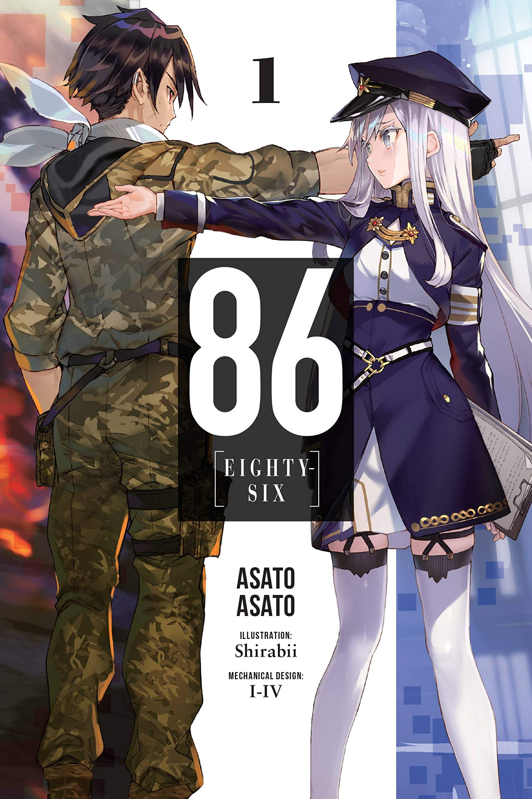

Summary:
According to the Republic of San Magnolia, their ongoing war against the Giadian Empire has no casualties—however, that is mere propaganda.
While the silver-haired Alba of the Republic's eighty-five sectors live safely behind protective walls, those of different appearances are interned in a secret eighty-sixth faction.
Known within the military as the Eighty-Six, they are forced to fight against the Empire's autonomous Legion under the command of the Republican "Handlers."
Vladilena Milizé is assigned to the Spearhead squadron to replace their previous Handler.
Shunned by her peers for being a fellow Eighty-Six supporter, she continues to fight against their inhumane discrimination.
Shinei Nouzen is the captain of the Spearhead squadron.
Infamous for being the sole survivor of every squadron he's been in, he insists on shouldering the names and wishes of his fallen comrades.
When the fates of these young souls from two different worlds collide, will it ignite the spark that lights their path to salvation, or will they burn themselves in the flames of despair?
Shinei Nouzen
Also known as "The Underataker" and the "Reaper," Shinei Nozen is able to hear the voices of the legion due to a near death experience form his brother choking him.
Being the most proficcient at battle, he is always left alive, while his comrades die around him.
He is forced to endure the burden of his friends and comrades as he they die by his hand, in order to prevent them from bring devoured by the legion.
Each dead comrade is a another emblem in his box, as he keeps a collects them as a token of their sacrafice, and a tribute to their memory.

Rating
Paris is the capital of France.
Members of the 86
Tokyo is the capital of Japan.